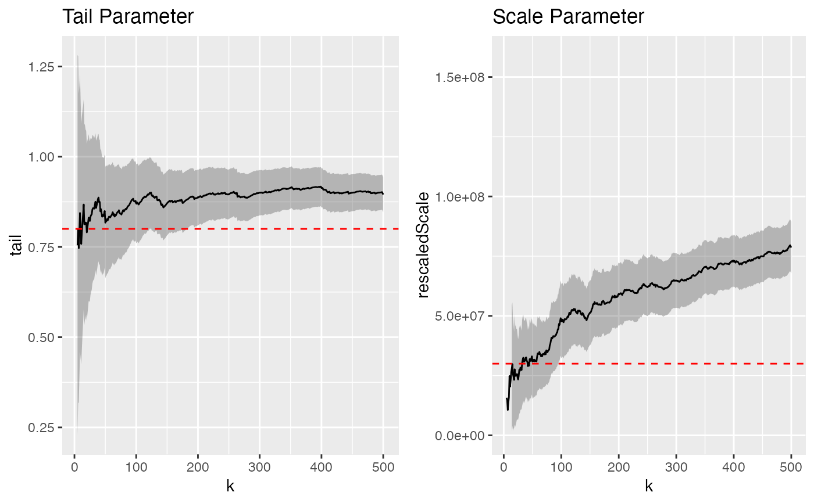
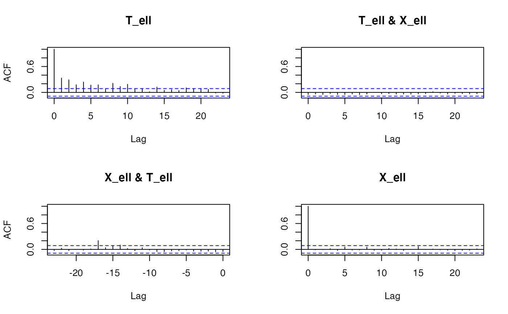
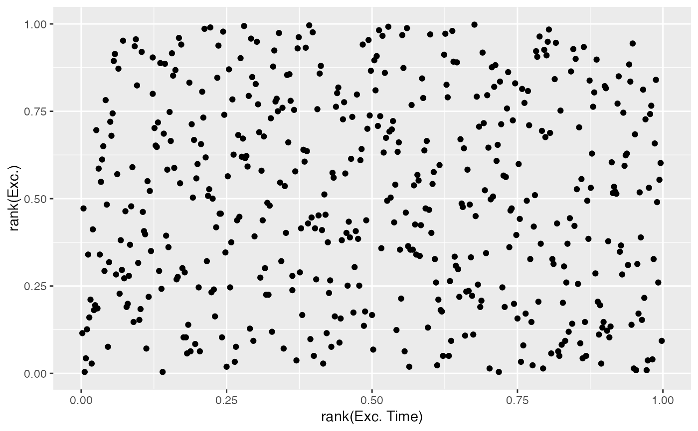

CTRE-package.RdFits a Continuous Time Random Exceedance model to bursty time series. CTREs model the distribution of threshold crossing times of extreme events. Fits are made by interactive visual assessment of "stability plots" using a shiny app.
"Peaks Over Threshold for Bursty Time Series", Katharina Hees, Smarak Nayak, Peter Straka. https://arxiv.org/abs/1802.05218
Useful links:
library(CTRE)# NOT RUN { runCTREshiny() # }#> 'ctre' object with 2488 timestamps and magnitudes. #> Timestamps: #> POSIXct[1:2488], format: "1982-01-01 00:55:00" "1982-01-01 16:43:15" "1982-01-01 22:13:16" ... #> Magnitudes: #> int [1:2488] 2404 94 60 53 107 5363 61 262 85 83 ...length(ctre_mod)#> [1] 2488#> 'ctre' object with 500 timestamps and magnitudes. #> Timestamps: #> POSIXct[1:500], format: "1982-01-01 00:55:00" "1982-01-02 06:09:42" "1982-01-03 00:11:51" ... #> Magnitudes: #> int [1:500] 2404 5363 262 421 2309 655 685 935 984 9763 ...magnitudes(ctre_mod)#> [1] 2404 5363 262 421 2309 655 685 935 984 9763 #> [11] 228 822 1006 375 1819 1428 419 540 365 4864 #> [21] 1756 784 489 1610 494 223 806 546 1617 230 #> [31] 7230 218 228 1143 1606 298 236 406 374 623 #> [41] 2057 562 1193 326 275 4600 31095 429 386 1043 #> [51] 430 653 448 232 580 460 819 1427 378 531 #> [61] 1083 233 426 449 479 5966 4691 408 4521 229 #> [71] 257 431 245 314 233 340 304 1896 277 1019 #> [81] 347 352 1728 1312 531 248 1028 255 326 418 #> [91] 408 751 260 256 213 1481 501 2833 289 1481 #> [101] 1482 220 235 243 279 371 342 1063 303 430 #> [111] 284 261 780 575 281 4635 5029 1121 320 331 #> [121] 227 1123 470 18903 375 459 367 358 1498 3248 #> [131] 7677 244 8452 225 245 266 352 359 776 659 #> [141] 3645 240 510 534 267 310 359 2061 261 277 #> [151] 407 3610 281 781 217 410 3194 1411 213791 1198 #> [161] 3590 443 493 291 258 251 213 709 1209 1497 #> [171] 18017 470 2843 20434 392 10152 460 1121 247 466 #> [181] 472 386 368 2681 60593 495 267 385 218 1517 #> [191] 528 1032 278 316 479 708 830 2239 324 367 #> [201] 1456 489 2174 583 440 647 392 906 457 893 #> [211] 405 2300 357 229 2619 1359 224 261 1223 590 #> [221] 857 410 232 279 332 582 25304 3478 726 33320 #> [231] 20609 782 220 9983 878 297 2228 13904 1170 579 #> [241] 277 378 1520 2609 324 596 414 423 965 1037 #> [251] 13670 979 5750 6122 216 794 20700 339 360 1708 #> [261] 414 286 367 268 1041 454 781 463 1276 7791 #> [271] 8678 385 263 224 216 283 280 370 331 213 #> [281] 256 230 377 246 878 893 276 155330 3277 262 #> [291] 574 451 57078 1283 1200 524 1145 5979 6260 1369 #> [301] 637 8609 3360 603 303 789 354 557 337 813 #> [311] 550 270 824 573 233 974 302 698 290 5290 #> [321] 241 316 220 1686 439 58007 929 2195 587 479 #> [331] 243 231 623 490 471 554 2178 548 1968 717 #> [341] 21000 308 358 666 295 303 383 8174 4487 246 #> [351] 718 243 340 230 567 265 7638 1000 912 2134 #> [361] 666 3374 282 3520 569 278 239 270 711 359 #> [371] 699 240 394 8504 437 1226 247 283 311 1516 #> [381] 294 446 610 535 259 359 393 1012 391 381 #> [391] 216 223 311 475 869 311 2052 394 351 1278 #> [401] 415 243 214 285 227 1899 487 1046 829 826 #> [411] 1108 214 237 2417 2309 496 2152 393 3269 265 #> [421] 1409 9983 1798 286 547 292 3734 412 3715 217 #> [431] 264 321 2201 404 572 363 4200 266 240 22747 #> [441] 441 1889 9400 2875 228 687 230 263 327 626 #> [451] 261 293 426 1600 240 234 332 427 23654 312 #> [461] 290 2454 269 259 469 2936 323 3311 1187 480 #> [471] 518 12464 2807 250 81391 5165 8678 269 448 3596 #> [481] 430 907 108043 408 1882 19095 413 228 380 304 #> [491] 534 1193 341 460 375 228 2287 38120 6891 423time(ctre_mod)#> [1] "1982-01-01 00:55:00 UTC" "1982-01-02 06:09:42 UTC" #> [3] "1982-01-03 00:11:51 UTC" "1982-01-07 19:37:40 UTC" #> [5] "1982-01-08 02:01:20 UTC" "1982-01-08 14:27:01 UTC" #> [7] "1982-01-11 01:25:36 UTC" "1982-01-24 01:52:35 UTC" #> [9] "1982-01-24 19:36:20 UTC" "1982-01-28 07:13:20 UTC" #> [11] "1982-01-29 03:12:40 UTC" "1982-01-30 00:45:10 UTC" #> [13] "1982-01-30 12:04:50 UTC" "1982-01-31 07:06:00 UTC" #> [15] "1982-01-31 13:15:35 UTC" "1982-02-01 00:30:35 UTC" #> [17] "1982-02-01 14:18:45 UTC" "1982-02-02 15:47:40 UTC" #> [19] "1982-02-02 18:51:55 UTC" "1982-02-03 01:12:26 UTC" #> [21] "1982-02-03 03:14:25 UTC" "1982-02-03 13:15:30 UTC" #> [23] "1982-02-03 18:51:50 UTC" "1982-02-03 20:20:55 UTC" #> [25] "1982-02-03 20:41:35 UTC" "1982-02-04 13:41:05 UTC" #> [27] "1982-02-04 15:38:55 UTC" "1982-02-04 18:56:05 UTC" #> [29] "1982-02-05 01:09:35 UTC" "1982-02-05 03:06:50 UTC" #> [31] "1982-02-05 09:03:45 UTC" "1982-02-05 11:53:00 UTC" #> [33] "1982-02-06 04:25:00 UTC" "1982-02-06 12:23:50 UTC" #> [35] "1982-02-06 13:31:15 UTC" "1982-02-06 16:40:20 UTC" #> [37] "1982-02-06 18:17:25 UTC" "1982-02-06 19:48:15 UTC" #> [39] "1982-02-07 10:36:50 UTC" "1982-02-07 11:36:45 UTC" #> [41] "1982-02-07 20:57:50 UTC" "1982-02-08 01:44:50 UTC" #> [43] "1982-02-08 02:41:15 UTC" "1982-02-08 06:47:55 UTC" #> [45] "1982-02-08 07:12:45 UTC" "1982-02-08 08:04:00 UTC" #> [47] "1982-02-08 12:49:55 UTC" "1982-02-08 21:20:40 UTC" #> [49] "1982-02-09 01:39:55 UTC" "1982-02-09 03:35:25 UTC" #> [51] "1982-02-09 04:40:10 UTC" "1982-02-09 07:10:25 UTC" #> [53] "1982-02-09 09:25:30 UTC" "1982-02-09 11:06:50 UTC" #> [55] "1982-02-09 14:11:00 UTC" "1982-02-10 03:07:45 UTC" #> [57] "1982-02-10 09:44:05 UTC" "1982-02-10 18:43:40 UTC" #> [59] "1982-02-10 22:16:10 UTC" "1982-02-11 12:09:45 UTC" #> [61] "1982-02-11 13:44:40 UTC" "1982-02-11 18:32:45 UTC" #> [63] "1982-02-11 20:30:55 UTC" "1982-02-11 23:51:15 UTC" #> [65] "1982-02-12 05:48:40 UTC" "1982-02-12 21:30:15 UTC" #> [67] "1982-02-12 21:54:45 UTC" "1982-02-13 23:26:05 UTC" #> [69] "1982-02-14 03:43:15 UTC" "1982-02-14 04:07:25 UTC" #> [71] "1982-02-14 23:10:50 UTC" "1982-02-16 18:59:25 UTC" #> [73] "1982-02-17 09:55:55 UTC" "1982-02-17 19:43:20 UTC" #> [75] "1982-02-17 23:32:00 UTC" "1982-02-18 03:20:45 UTC" #> [77] "1982-02-18 04:44:00 UTC" "1982-02-18 09:02:59 UTC" #> [79] "1982-02-18 13:02:29 UTC" "1982-02-18 23:31:55 UTC" #> [81] "1982-02-19 04:51:45 UTC" "1982-02-19 13:36:49 UTC" #> [83] "1982-02-20 09:19:35 UTC" "1982-02-20 17:23:43 UTC" #> [85] "1982-02-23 03:12:42 UTC" "1982-02-24 05:09:05 UTC" #> [87] "1982-02-25 21:51:25 UTC" "1982-02-26 15:16:50 UTC" #> [89] "1982-02-26 17:35:30 UTC" "1982-03-01 02:35:54 UTC" #> [91] "1982-03-01 19:24:08 UTC" "1982-03-01 22:28:44 UTC" #> [93] "1982-03-02 00:39:56 UTC" "1982-03-03 01:24:24 UTC" #> [95] "1982-03-04 14:20:40 UTC" "1982-03-05 02:41:26 UTC" #> [97] "1982-03-05 06:40:52 UTC" "1982-03-07 02:46:24 UTC" #> [99] "1982-03-07 04:05:40 UTC" "1982-03-07 13:51:40 UTC" #> [101] "1982-03-08 19:56:58 UTC" "1982-03-16 01:56:10 UTC" #> [103] "1982-03-17 14:24:27 UTC" "1982-03-18 12:30:40 UTC" #> [105] "1982-03-18 13:54:58 UTC" "1982-03-19 04:35:35 UTC" #> [107] "1982-03-21 07:44:20 UTC" "1982-03-22 05:55:31 UTC" #> [109] "1982-03-22 16:24:07 UTC" "1982-03-23 05:16:09 UTC" #> [111] "1982-03-23 07:14:54 UTC" "1982-03-23 12:58:19 UTC" #> [113] "1982-03-24 04:57:30 UTC" "1982-03-24 06:54:51 UTC" #> [115] "1982-03-24 20:34:15 UTC" "1982-03-26 05:46:55 UTC" #> [117] "1982-03-27 14:13:45 UTC" "1982-03-27 15:18:00 UTC" #> [119] "1982-03-28 03:58:25 UTC" "1982-03-28 04:30:00 UTC" #> [121] "1982-03-28 05:54:19 UTC" "1982-03-29 09:05:20 UTC" #> [123] "1982-03-29 19:39:45 UTC" "1982-03-30 05:21:10 UTC" #> [125] "1982-03-30 08:34:10 UTC" "1982-03-30 14:17:32 UTC" #> [127] "1982-03-30 20:58:20 UTC" "1982-03-31 03:12:10 UTC" #> [129] "1982-03-31 06:11:00 UTC" "1982-03-31 08:33:05 UTC" #> [131] "1982-03-31 22:21:52 UTC" "1982-04-01 23:49:35 UTC" #> [133] "1982-04-02 09:01:20 UTC" "1982-04-03 12:27:19 UTC" #> [135] "1982-04-11 03:31:30 UTC" "1982-04-12 12:49:39 UTC" #> [137] "1982-04-12 16:06:45 UTC" "1982-04-16 14:16:02 UTC" #> [139] "1982-04-16 21:20:45 UTC" "1982-04-19 10:19:14 UTC" #> [141] "1982-04-19 18:10:21 UTC" "1982-04-22 12:43:55 UTC" #> [143] "1982-05-06 16:58:53 UTC" "1982-05-11 03:21:07 UTC" #> [145] "1982-05-17 23:19:04 UTC" "1982-05-22 00:37:43 UTC" #> [147] "1982-05-23 02:43:25 UTC" "1982-05-23 18:42:14 UTC" #> [149] "1982-05-28 16:08:24 UTC" "1982-05-29 20:21:44 UTC" #> [151] "1982-05-29 20:55:36 UTC" "1982-05-29 21:49:24 UTC" #> [153] "1982-05-30 09:49:29 UTC" "1982-05-31 03:03:35 UTC" #> [155] "1982-06-02 16:50:01 UTC" "1982-06-02 22:55:11 UTC" #> [157] "1982-06-03 03:22:04 UTC" "1982-06-03 08:30:10 UTC" #> [159] "1982-06-03 11:40:32 UTC" "1982-06-03 21:28:08 UTC" #> [161] "1982-06-04 00:11:31 UTC" "1982-06-04 02:59:03 UTC" #> [163] "1982-06-04 06:31:35 UTC" "1982-06-04 08:05:54 UTC" #> [165] "1982-06-04 08:33:48 UTC" "1982-06-04 13:11:50 UTC" #> [167] "1982-06-04 13:17:47 UTC" "1982-06-04 14:28:29 UTC" #> [169] "1982-06-04 14:47:00 UTC" "1982-06-04 19:12:16 UTC" #> [171] "1982-06-05 01:24:26 UTC" "1982-06-05 02:45:40 UTC" #> [173] "1982-06-05 03:06:36 UTC" "1982-06-05 06:13:31 UTC" #> [175] "1982-06-05 11:13:29 UTC" "1982-06-05 15:19:25 UTC" #> [177] "1982-06-05 15:49:30 UTC" "1982-06-05 15:52:14 UTC" #> [179] "1982-06-05 17:20:39 UTC" "1982-06-05 20:04:28 UTC" #> [181] "1982-06-05 20:44:16 UTC" "1982-06-05 23:18:16 UTC" #> [183] "1982-06-06 03:05:37 UTC" "1982-06-06 14:19:41 UTC" #> [185] "1982-06-06 16:38:57 UTC" "1982-06-06 18:14:06 UTC" #> [187] "1982-06-06 21:58:37 UTC" "1982-06-07 13:37:30 UTC" #> [189] "1982-06-08 12:13:54 UTC" "1982-06-08 20:00:32 UTC" #> [191] "1982-06-09 11:34:53 UTC" "1982-06-09 22:20:52 UTC" #> [193] "1982-06-09 22:32:34 UTC" "1982-06-09 22:42:25 UTC" #> [195] "1982-06-10 02:14:09 UTC" "1982-06-11 06:39:11 UTC" #> [197] "1982-06-11 11:08:55 UTC" "1982-06-11 23:28:33 UTC" #> [199] "1982-06-12 01:49:55 UTC" "1982-06-12 02:28:11 UTC" #> [201] "1982-06-12 02:45:22 UTC" "1982-06-12 05:45:45 UTC" #> [203] "1982-06-12 11:10:24 UTC" "1982-06-12 15:10:20 UTC" #> [205] "1982-06-12 15:35:51 UTC" "1982-06-12 17:36:14 UTC" #> [207] "1982-06-12 18:17:58 UTC" "1982-06-12 18:46:34 UTC" #> [209] "1982-06-12 20:15:49 UTC" "1982-06-13 10:20:16 UTC" #> [211] "1982-06-13 17:00:43 UTC" "1982-06-13 18:15:30 UTC" #> [213] "1982-06-13 19:41:59 UTC" "1982-06-13 20:03:41 UTC" #> [215] "1982-06-13 21:29:45 UTC" "1982-06-13 23:10:19 UTC" #> [217] "1982-06-14 00:26:57 UTC" "1982-06-14 03:38:41 UTC" #> [219] "1982-06-14 04:22:52 UTC" "1982-06-14 09:14:36 UTC" #> [221] "1982-06-14 13:06:48 UTC" "1982-06-14 14:39:26 UTC" #> [223] "1982-06-14 15:32:26 UTC" "1982-06-14 16:28:08 UTC" #> [225] "1982-06-14 17:05:56 UTC" "1982-06-14 18:14:42 UTC" #> [227] "1982-06-15 00:30:10 UTC" "1982-06-15 02:17:46 UTC" #> [229] "1982-06-15 08:10:16 UTC" "1982-06-15 10:17:42 UTC" #> [231] "1982-06-15 15:08:18 UTC" "1982-06-15 20:57:20 UTC" #> [233] "1982-06-16 01:58:11 UTC" "1982-06-16 02:07:29 UTC" #> [235] "1982-06-16 20:28:00 UTC" "1982-06-16 23:35:33 UTC" #> [237] "1982-06-17 02:45:27 UTC" "1982-06-17 10:48:19 UTC" #> [239] "1982-06-17 13:07:18 UTC" "1982-06-17 18:35:13 UTC" #> [241] "1982-06-17 20:27:01 UTC" "1982-06-18 09:45:36 UTC" #> [243] "1982-06-18 11:01:54 UTC" "1982-06-18 15:11:46 UTC" #> [245] "1982-06-18 21:36:42 UTC" "1982-06-19 00:46:36 UTC" #> [247] "1982-06-19 07:49:36 UTC" "1982-06-19 11:02:59 UTC" #> [249] "1982-06-19 17:16:47 UTC" "1982-06-19 19:48:08 UTC" #> [251] "1982-06-20 01:12:55 UTC" "1982-06-20 01:59:22 UTC" #> [253] "1982-06-20 03:59:33 UTC" "1982-06-20 11:59:40 UTC" #> [255] "1982-06-20 22:33:52 UTC" "1982-06-21 16:10:14 UTC" #> [257] "1982-06-21 22:46:02 UTC" "1982-06-22 05:29:50 UTC" #> [259] "1982-06-22 14:21:28 UTC" "1982-06-23 00:05:13 UTC" #> [261] "1982-06-23 06:34:42 UTC" "1982-06-23 10:03:24 UTC" #> [263] "1982-06-23 18:56:40 UTC" "1982-06-23 19:02:43 UTC" #> [265] "1982-06-23 23:29:03 UTC" "1982-06-24 04:10:36 UTC" #> [267] "1982-06-24 04:44:06 UTC" "1982-06-25 10:45:41 UTC" #> [269] "1982-06-25 19:43:28 UTC" "1982-06-25 21:31:08 UTC" #> [271] "1982-06-26 00:42:57 UTC" "1982-06-26 02:05:49 UTC" #> [273] "1982-06-26 19:25:00 UTC" "1982-06-27 10:20:21 UTC" #> [275] "1982-07-03 17:40:28 UTC" "1982-07-07 04:07:51 UTC" #> [277] "1982-07-07 04:14:43 UTC" "1982-07-08 02:22:07 UTC" #> [279] "1982-07-08 04:11:49 UTC" "1982-07-08 07:25:06 UTC" #> [281] "1982-07-08 07:28:35 UTC" "1982-07-08 14:09:04 UTC" #> [283] "1982-07-08 15:37:21 UTC" "1982-07-08 20:30:13 UTC" #> [285] "1982-07-09 00:15:44 UTC" "1982-07-09 05:55:56 UTC" #> [287] "1982-07-09 07:13:06 UTC" "1982-07-09 07:24:58 UTC" #> [289] "1982-07-09 10:45:32 UTC" "1982-07-09 15:28:36 UTC" #> [291] "1982-07-09 16:17:53 UTC" "1982-07-09 20:13:22 UTC" #> [293] "1982-07-09 21:05:38 UTC" "1982-07-09 22:39:10 UTC" #> [295] "1982-07-09 23:03:01 UTC" "1982-07-10 00:35:56 UTC" #> [297] "1982-07-10 01:35:22 UTC" "1982-07-10 01:58:04 UTC" #> [299] "1982-07-10 03:15:50 UTC" "1982-07-10 04:07:46 UTC" #> [301] "1982-07-10 07:05:40 UTC" "1982-07-10 08:25:26 UTC" #> [303] "1982-07-10 10:06:16 UTC" "1982-07-10 11:58:38 UTC" #> [305] "1982-07-10 15:09:24 UTC" "1982-07-10 16:41:32 UTC" #> [307] "1982-07-10 20:01:47 UTC" "1982-07-10 20:49:13 UTC" #> [309] "1982-07-10 21:06:32 UTC" "1982-07-10 21:35:27 UTC" #> [311] "1982-07-11 02:05:40 UTC" "1982-07-11 03:27:58 UTC" #> [313] "1982-07-11 03:37:38 UTC" "1982-07-11 04:43:31 UTC" #> [315] "1982-07-11 06:14:58 UTC" "1982-07-11 06:36:35 UTC" #> [317] "1982-07-11 07:00:21 UTC" "1982-07-11 08:10:48 UTC" #> [319] "1982-07-11 11:28:48 UTC" "1982-07-11 14:01:29 UTC" #> [321] "1982-07-11 18:48:46 UTC" "1982-07-11 22:11:07 UTC" #> [323] "1982-07-11 23:31:31 UTC" "1982-07-12 03:10:05 UTC" #> [325] "1982-07-12 06:07:06 UTC" "1982-07-12 09:32:36 UTC" #> [327] "1982-07-12 15:30:56 UTC" "1982-07-12 20:39:52 UTC" #> [329] "1982-07-14 10:41:45 UTC" "1982-07-14 14:53:12 UTC" #> [331] "1982-07-14 20:08:37 UTC" "1982-07-14 21:33:32 UTC" #> [333] "1982-07-15 02:18:09 UTC" "1982-07-15 03:33:03 UTC" #> [335] "1982-07-15 15:25:44 UTC" "1982-07-16 00:22:38 UTC" #> [337] "1982-07-16 03:20:46 UTC" "1982-07-16 15:20:27 UTC" #> [339] "1982-07-16 22:20:06 UTC" "1982-07-16 23:52:47 UTC" #> [341] "1982-07-17 02:02:13 UTC" "1982-07-17 10:04:19 UTC" #> [343] "1982-07-17 20:30:01 UTC" "1982-07-17 22:04:06 UTC" #> [345] "1982-07-18 13:00:09 UTC" "1982-07-18 22:24:15 UTC" #> [347] "1982-07-19 00:18:37 UTC" "1982-07-19 00:57:02 UTC" #> [349] "1982-07-19 04:16:02 UTC" "1982-07-19 12:48:03 UTC" #> [351] "1982-07-19 12:50:32 UTC" "1982-07-19 14:24:34 UTC" #> [353] "1982-07-19 16:08:57 UTC" "1982-07-19 18:41:26 UTC" #> [355] "1982-07-19 20:13:52 UTC" "1982-07-20 02:33:46 UTC" #> [357] "1982-07-20 04:11:27 UTC" "1982-07-20 21:52:59 UTC" #> [359] "1982-07-20 23:06:13 UTC" "1982-07-21 01:14:18 UTC" #> [361] "1982-07-21 16:41:14 UTC" "1982-07-21 18:12:52 UTC" #> [363] "1982-07-21 18:40:24 UTC" "1982-07-22 05:11:29 UTC" #> [365] "1982-07-22 16:39:55 UTC" "1982-08-03 13:00:58 UTC" #> [367] "1982-08-04 23:40:45 UTC" "1982-08-05 03:42:18 UTC" #> [369] "1982-08-05 11:38:44 UTC" "1982-08-05 15:59:49 UTC" #> [371] "1982-08-06 11:20:03 UTC" "1982-08-06 23:25:07 UTC" #> [373] "1982-08-07 21:40:59 UTC" "1982-08-08 02:01:48 UTC" #> [375] "1982-08-08 02:46:21 UTC" "1982-08-09 02:04:29 UTC" #> [377] "1982-08-09 06:46:50 UTC" "1982-08-10 05:25:09 UTC" #> [379] "1982-08-10 13:16:12 UTC" "1982-08-11 11:38:09 UTC" #> [381] "1982-08-13 13:42:36 UTC" "1982-08-13 22:55:37 UTC" #> [383] "1982-08-14 02:40:35 UTC" "1982-08-14 05:09:38 UTC" #> [385] "1982-08-16 02:03:15 UTC" "1982-08-19 04:11:15 UTC" #> [387] "1982-08-26 22:56:30 UTC" "1982-08-27 03:23:51 UTC" #> [389] "1982-08-27 05:46:31 UTC" "1982-08-28 22:58:13 UTC" #> [391] "1982-08-31 05:53:18 UTC" "1982-08-31 17:21:15 UTC" #> [393] "1982-09-01 08:45:58 UTC" "1982-09-01 16:19:51 UTC" #> [395] "1982-09-10 08:26:21 UTC" "1982-09-18 16:39:24 UTC" #> [397] "1982-09-28 23:30:53 UTC" "1982-09-29 15:18:12 UTC" #> [399] "1982-10-04 07:50:10 UTC" "1982-10-06 23:01:36 UTC" #> [401] "1982-10-14 00:14:36 UTC" "1982-10-14 01:52:30 UTC" #> [403] "1982-10-15 20:35:50 UTC" "1982-10-19 11:33:26 UTC" #> [405] "1982-10-24 15:03:46 UTC" "1982-10-24 15:08:19 UTC" #> [407] "1982-10-25 22:49:32 UTC" "1982-10-26 00:25:20 UTC" #> [409] "1982-10-27 03:03:24 UTC" "1982-10-27 04:09:01 UTC" #> [411] "1982-10-27 04:27:46 UTC" "1982-10-27 20:17:26 UTC" #> [413] "1982-11-03 00:48:46 UTC" "1982-11-04 03:29:59 UTC" #> [415] "1982-11-12 14:17:46 UTC" "1982-11-15 16:14:22 UTC" #> [417] "1982-11-17 13:57:56 UTC" "1982-11-19 05:28:42 UTC" #> [419] "1982-11-20 10:10:06 UTC" "1982-11-21 10:19:42 UTC" #> [421] "1982-11-21 14:16:11 UTC" "1982-11-22 12:22:12 UTC" #> [423] "1982-11-22 14:44:06 UTC" "1982-11-22 17:02:00 UTC" #> [425] "1982-11-22 17:59:45 UTC" "1982-11-22 23:29:11 UTC" #> [427] "1982-11-23 03:17:21 UTC" "1982-11-23 04:27:33 UTC" #> [429] "1982-11-23 08:05:50 UTC" "1982-11-23 09:20:27 UTC" #> [431] "1982-11-23 11:11:08 UTC" "1982-11-23 11:17:58 UTC" #> [433] "1982-11-23 13:44:56 UTC" "1982-11-23 14:31:28 UTC" #> [435] "1982-11-23 16:52:27 UTC" "1982-11-24 19:39:18 UTC" #> [437] "1982-11-25 04:13:28 UTC" "1982-11-25 13:03:45 UTC" #> [439] "1982-11-25 17:47:36 UTC" "1982-11-26 02:17:52 UTC" #> [441] "1982-11-26 05:15:47 UTC" "1982-11-26 15:06:06 UTC" #> [443] "1982-11-26 16:10:21 UTC" "1982-11-29 21:36:57 UTC" #> [445] "1982-11-30 00:44:56 UTC" "1982-11-30 04:11:22 UTC" #> [447] "1982-12-02 00:03:20 UTC" "1982-12-02 21:08:57 UTC" #> [449] "1982-12-03 01:11:22 UTC" "1982-12-04 09:12:17 UTC" #> [451] "1982-12-04 09:25:45 UTC" "1982-12-05 22:45:02 UTC" #> [453] "1982-12-06 00:20:29 UTC" "1982-12-06 21:05:00 UTC" #> [455] "1982-12-06 23:59:22 UTC" "1982-12-07 02:18:55 UTC" #> [457] "1982-12-07 17:46:58 UTC" "1982-12-07 18:06:24 UTC" #> [459] "1982-12-07 23:35:30 UTC" "1982-12-08 03:01:14 UTC" #> [461] "1982-12-08 11:10:11 UTC" "1982-12-08 13:48:20 UTC" #> [463] "1982-12-09 09:35:21 UTC" "1982-12-09 17:33:30 UTC" #> [465] "1982-12-09 18:59:39 UTC" "1982-12-09 21:42:33 UTC" #> [467] "1982-12-10 01:15:26 UTC" "1982-12-10 02:36:12 UTC" #> [469] "1982-12-10 03:56:03 UTC" "1982-12-10 18:15:40 UTC" #> [471] "1982-12-11 05:43:48 UTC" "1982-12-13 03:20:52 UTC" #> [473] "1982-12-13 08:02:43 UTC" "1982-12-15 10:55:08 UTC" #> [475] "1982-12-15 16:26:19 UTC" "1982-12-15 21:43:50 UTC" #> [477] "1982-12-16 14:51:59 UTC" "1982-12-16 19:23:49 UTC" #> [479] "1982-12-17 00:02:59 UTC" "1982-12-17 01:44:24 UTC" #> [481] "1982-12-17 05:19:06 UTC" "1982-12-17 10:00:26 UTC" #> [483] "1982-12-17 18:54:40 UTC" "1982-12-17 21:03:52 UTC" #> [485] "1982-12-18 03:50:13 UTC" "1982-12-18 08:17:31 UTC" #> [487] "1982-12-19 01:33:23 UTC" "1982-12-19 01:42:51 UTC" #> [489] "1982-12-19 09:48:17 UTC" "1982-12-19 15:49:28 UTC" #> [491] "1982-12-19 20:18:56 UTC" "1982-12-21 02:11:35 UTC" #> [493] "1982-12-26 10:39:42 UTC" "1982-12-26 15:06:08 UTC" #> [495] "1982-12-27 05:23:44 UTC" "1982-12-27 11:36:45 UTC" #> [497] "1982-12-28 15:56:52 UTC" "1982-12-29 06:43:00 UTC" #> [499] "1982-12-30 01:41:15 UTC" "1982-12-30 18:42:51 UTC"interarrival(ctre_mod)#> [1] 1754.700000 1082.150000 6925.816667 383.666667 745.683333 #> [6] 3538.583333 18746.983333 1063.750000 5017.000000 1199.333333 #> [11] 1292.500000 679.666667 1141.166667 369.583333 675.000000 #> [16] 828.166667 1528.916667 184.250000 380.516667 121.983333 #> [21] 601.083333 336.333333 89.083333 20.666667 1019.500000 #> [26] 117.833333 197.166667 373.500000 117.250000 356.916667 #> [31] 169.250000 992.000000 478.833333 67.416667 189.083333 #> [36] 97.083333 90.833333 888.583333 59.916667 561.083333 #> [41] 287.000000 56.416667 246.666667 24.833333 51.250000 #> [46] 285.916667 510.750000 259.250000 115.500000 64.750000 #> [51] 150.250000 135.083333 101.333333 184.166667 776.750000 #> [56] 396.333333 539.583333 212.500000 833.583333 94.916667 #> [61] 288.083333 118.166667 200.333333 357.416667 941.583333 #> [66] 24.500000 1531.333333 257.166667 24.166667 1143.416667 #> [71] 2628.583333 896.500000 587.416667 228.666667 228.750000 #> [76] 83.250000 258.983333 239.500000 629.433333 319.833333 #> [81] 525.066667 1182.766667 484.133333 3468.983333 1556.383333 #> [86] 2442.333333 1045.416667 138.666667 3420.400000 1008.233333 #> [91] 184.600000 131.200000 1484.466667 2216.266667 740.766667 #> [96] 239.433333 2645.533333 79.266667 586.000000 1805.300000 #> [101] 10439.200000 2188.283333 1326.216667 84.300000 880.616667 #> [106] 3068.750000 1331.183333 628.600000 772.033333 118.750000 #> [111] 343.416667 959.183333 117.350000 819.400000 1992.666667 #> [116] 1946.833333 64.250000 760.416667 31.583333 84.316667 #> [121] 1631.016667 634.416667 581.416667 193.000000 343.366667 #> [126] 400.800000 373.833333 178.833333 142.083333 828.783333 #> [131] 1527.716667 551.750000 1645.983333 10984.183333 1998.150000 #> [136] 197.100000 5649.283333 424.716667 3658.483333 471.116667 #> [141] 3993.566667 20414.966667 6382.233333 9837.950000 5838.650000 #> [146] 1565.700000 958.816667 7046.166667 1693.333333 33.866667 #> [151] 53.800000 720.083333 1034.100000 3706.433333 365.166667 #> [156] 266.883333 308.100000 190.366667 587.600000 163.383333 #> [161] 167.533333 212.533333 94.316667 27.900000 278.033333 #> [166] 5.950000 70.700000 18.516667 265.266667 372.166667 #> [171] 81.233333 20.933333 186.916667 299.966667 245.933333 #> [176] 30.083333 2.733333 88.416667 163.816667 39.800000 #> [181] 154.000000 227.350000 674.066667 139.266667 95.150000 #> [186] 224.516667 938.883333 1356.400000 466.633333 934.350000 #> [191] 645.983333 11.700000 9.850000 211.733333 1705.033333 #> [196] 269.733333 739.633333 141.366667 38.266667 17.183333 #> [201] 180.383333 324.650000 239.933333 25.516667 120.383333 #> [206] 41.733333 28.600000 89.250000 844.450000 400.450000 #> [211] 74.783333 86.483333 21.700000 86.066667 100.566667 #> [216] 76.633333 191.733333 44.183333 291.733333 232.200000 #> [221] 92.633333 53.000000 55.700000 37.800000 68.766667 #> [226] 375.466667 107.600000 352.500000 127.433333 290.600000 #> [231] 349.033333 300.850000 9.300000 1100.516667 187.550000 #> [236] 189.900000 482.866667 138.983333 327.916667 111.800000 #> [241] 798.583333 76.300000 249.866667 384.933333 189.900000 #> [246] 423.000000 193.383333 373.800000 151.350000 324.783333 #> [251] 46.450000 120.183333 480.116667 634.200000 1056.366667 #> [256] 395.800000 403.800000 531.633333 583.750000 389.483333 #> [261] 208.700000 533.266667 6.050000 266.333333 281.550000 #> [266] 33.500000 1801.583333 537.783333 107.666667 191.816667 #> [271] 82.866667 1039.183333 895.350000 9080.116667 4947.383333 #> [276] 6.866667 1327.400000 109.700000 193.283333 3.483333 #> [281] 400.483333 88.283333 292.866667 225.516667 340.200000 #> [286] 77.166667 11.866667 200.566667 283.066667 49.283333 #> [291] 235.483333 52.266667 93.533333 23.850000 92.916667 #> [296] 59.433333 22.700000 77.766667 51.933333 177.900000 #> [301] 79.766667 100.833333 112.366667 190.766667 92.133333 #> [306] 200.250000 47.433333 17.316667 28.916667 270.216667 #> [311] 82.300000 9.666667 65.883333 91.450000 21.616667 #> [316] 23.766667 70.450000 198.000000 152.683333 287.283333 #> [321] 202.350000 80.400000 218.566667 177.016667 205.500000 #> [326] 358.333333 308.933333 2281.883333 251.450000 315.416667 #> [331] 84.916667 284.616667 74.900000 712.683333 536.900000 #> [336] 178.133333 719.683333 419.650000 92.683333 129.433333 #> [341] 482.100000 625.700000 94.083333 896.050000 564.100000 #> [346] 114.366667 38.416667 199.000000 512.016667 2.483333 #> [351] 94.033333 104.383333 152.483333 92.433333 379.900000 #> [356] 97.683333 1061.533333 73.233333 128.083333 926.933333 #> [361] 91.633333 27.533333 631.083333 688.433333 17061.050000 #> [366] 2079.783333 241.550000 476.433333 261.083333 1160.233333 #> [371] 725.066667 1335.866667 260.816667 44.550000 1398.133333 #> [376] 282.350000 1358.316667 471.050000 1341.950000 3004.450000 #> [381] 553.016667 224.966667 149.050000 2693.616667 4448.000000 #> [386] 11205.250000 267.350000 142.666667 2471.700000 3295.083333 #> [391] 687.950000 924.716667 453.883333 12486.500000 12013.050000 #> [396] 14811.483333 947.316667 6751.966667 3791.433333 10153.000000 #> [401] 97.900000 2563.333333 5217.600000 7410.333333 4.550000 #> [406] 1901.216667 95.800000 1598.066667 65.616667 18.750000 #> [411] 949.666667 8911.333333 1601.216667 12167.783333 4436.600000 #> [416] 2743.566667 2370.766667 1721.400000 1449.600000 236.483333 #> [421] 1326.016667 141.900000 137.900000 57.750000 329.433333 #> [426] 228.166667 70.200000 218.283333 74.616667 110.683333 #> [431] 6.833333 146.966667 46.533333 140.983333 1606.850000 #> [436] 514.166667 530.283333 283.850000 510.266667 177.916667 #> [441] 590.316667 64.250000 4646.600000 187.983333 206.433333 #> [446] 2631.966667 1265.616667 242.416667 1920.916667 13.466667 #> [451] 2239.283333 95.450000 1244.516667 174.366667 139.550000 #> [456] 928.050000 19.433333 329.100000 205.733333 488.950000 #> [461] 158.150000 1187.016667 478.150000 86.150000 162.900000 #> [466] 212.883333 80.766667 79.850000 859.616667 688.133333 #> [471] 2737.066667 281.850000 3052.416667 331.183333 317.516667 #> [476] 1028.150000 271.833333 279.166667 101.416667 214.700000 #> [481] 281.333333 534.233333 129.200000 406.350000 267.300000 #> [486] 1035.866667 9.466667 485.433333 361.183333 269.466667 #> [491] 1792.650000 7708.116667 266.433333 857.600000 373.016667 #> [496] 1700.116667 886.133333 1138.250000 1021.600000#>acf(ctre_mod)empcopula(ctre_mod)